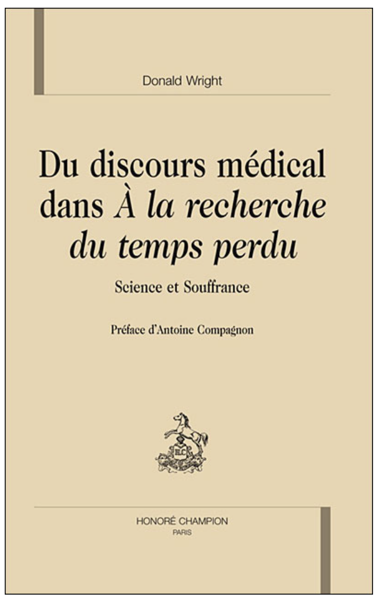
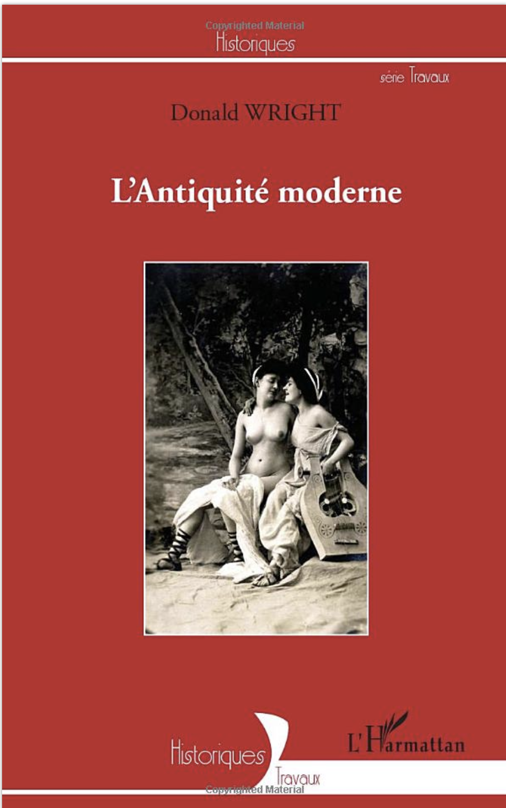
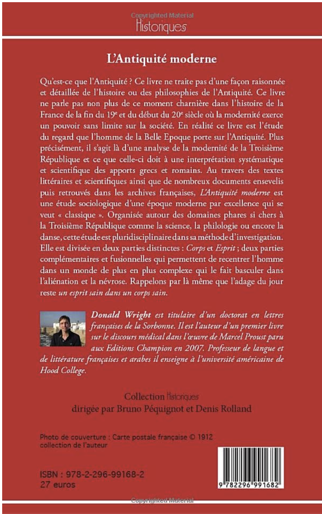

“Du discours médical dans « À la recherche du temps perdu » : science et souffrance”
2007
Paris, Honoré Champion
Préface by Antoine Compagnon de l'Académie française

“L'Antiquité moderne”
2012
Paris, L'Harmattan
In the collection « Historiques » under the direction of Bruno Péquignot,
Sorbonne Nouvelle, and Denis Rolland, l'Institut d'études politiques de Paris

“Gulf Nation Summit at Camp David”
May 12, 2015
Frederick News Post
“Five Questions on Syria with Donald Wright”
September 16, 2013
Frederick News Post
“What's Happening in Libya”
October 21, 2013
Frederick News Post
“Proust et le langage de l'âme, étude du vocabulaire scientifique chez Proust”
2011
In the collection Les Paradigmes de l'âme. Université de Paris IV - Sorbonne
Presses universitaires de la Sorbonne Nouvelle
“From Jewelry to Jets”
2000
Exhibition Catalogue - Carnegie Museum of Art, Pittsburgh, PA